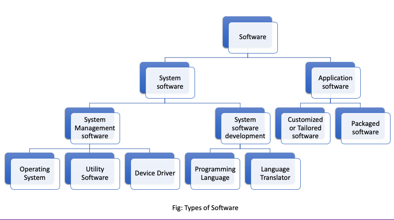

Computer software and operating system
Software is a set of instructions, data or programs used to operate computers and execute specific tasks
Operating System
An operating system (OS) is an integrated set of program that controls overall resources such as CPU, memory, input-output device of the computer system. The major objective of operating system is to improve the performance and efficiency of a computer system. Like the manager of a company, an operating system is responsible for the smooth and efficient functioning of the entire computer system. The operating system provides the platform for other application program/software to run and execute. It provides user with an interface so that user can easily communicate with computers, which is more convenient to use and operate.Functions:
- It controls, monitor and co-ordinate overall operation of our computer system.
- It act as an interface between user and computer.
- It provide platform to develop, run and execute other computer program.
- It manages hardware resources such as CPU, memories, input-output terminals, networking equipment etc.
- It hides programming and hardware complexity to the user.
Types of Operating System
A) Types of Operating Systems Based on Processing:
Multi-programming OS: Executes multiple user programs on a single processor, improving resource utilization. Examples include multi-tasking, multi-processing, and multi-user systems.Multi-tasking OS: Allows multiple tasks to run concurrently in a single-user environment. Common examples are MS-Windows, Linux, and macOS.
Multiprocessing OS: Uses more than one processor to run programs simultaneously, improving execution speed. UNIX is a typical example.
Time-Sharing OS: Allows multiple users to share CPU time. Tasks switch frequently, providing an immediate response. Examples: MS-DOS, UNIX.
Advantages: Quick responses, reduced CPU idle time.
Disadvantages: Reliability, security, and integrity issues.
Batch Processing OS: Groups similar jobs into batches for sequential processing without user interaction during execution. Common in payroll, weather forecasting, etc.
Multi-threading OS: Divides a program into threads that can be executed concurrently, improving efficiency.
Real-time OS: Processes tasks in a predefined time, suitable for critical operations like flight seat availability and rocket launching systems.
Online Processing OS: Processes transactions immediately as they occur, allowing user interaction during processing.
B) Types of Operating Systems Based on User Interface (UI):
Character User Interface (CUI): Operates using text-based commands. It is less user-friendly, requiring users to memorize commands. Examples include MS-DOS and UNIX.Features: Single-user, single-tasking, faster than GUI, and no graphical support.
Advantages: Quick responses for users who know the commands.
Disadvantages: Difficult for beginners; not visually appealing.
Graphical User Interface (GUI): Allows interaction using graphics, icons, and dialogue boxes. It’s more user-friendly and easier for non-technical users.
Features: Multi-tasking, user-friendly, supports multimedia, and requires more memory.
Advantages: Easy to use, supports full multimedia.
Disadvantages: Consumes more memory and resources.